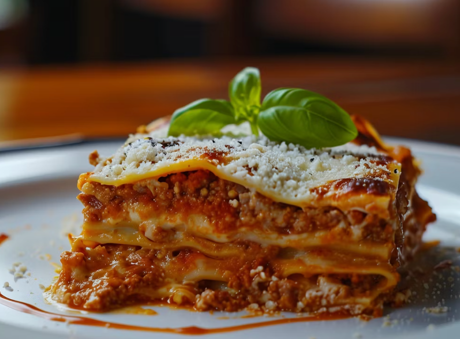

Lasagna
Home

Description
Lasagna is a comforting Italian-American baked pasta dish with layers of tender noodles, savory meat sauce, creamy ricotta filling, and gooey melted cheese, perfect for feeding a crowd or meal prepping.
Ingredients
For the meat sauce:
- 1 lb (450g) ground beef
- ½ lb (225g) mild Italian sausage (casings removed)
- 1 medium onion, finely chopped
- 4 garlic cloves, minced
- 1 (28 oz) can crushed tomatoes
- 1 (15 oz) can tomato sauce
- 1 (6 oz) can tomato paste
- ½ cup water
- 2 tsp dried basil
- 1 tsp dried oregano
- 1 tsp salt
- ½ tsp black pepper
- 2 tbsp fresh parsley, chopped (optional)
For the cheese layers:
- 16 oz (450g) ricotta cheese
- 1 large egg
- ½ cup grated Parmesan cheese
- 2 tbsp fresh parsley, chopped
- 4 cups shredded mozzarella cheese
- 1 cup grated Parmesan cheese (for topping)
Other:
- 12 lasagna noodles (oven-ready/no-boil preferred, or regular boiled according to package)
Steps
- Preheat oven to 375°F (190°C). Grease a 9x13-inch baking dish.
- Make the meat sauce: In a large skillet or pot over medium heat, brown the ground beef and sausage, breaking it up as it cooks. Add onion and garlic; cook until softened (about 5 minutes). Drain excess fat if needed.
- Stir in crushed tomatoes, tomato sauce, tomato paste, water, basil, oregano, salt, and pepper. Simmer on low for 20-30 minutes, stirring occasionally. Stir in parsley if using.
- Prepare ricotta mixture: In a bowl, combine ricotta, egg, ½ cup Parmesan, and parsley. Mix well.
- Assemble the lasagna: Spread 1 cup meat sauce on the bottom of the dish. Layer 4 noodles over sauce. Spread ⅓ of the ricotta mixture, then 1 cup mozzarella, and 1½ cups meat sauce. Repeat layers twice more (noodles, ricotta, mozzarella, sauce). Top with remaining noodles, sauce, then sprinkle with remaining mozzarella and 1 cup Parmesan.
- Cover with foil (spray foil with oil to prevent sticking). Bake for 25 minutes. Remove foil and bake another 25 minutes until bubbly and cheese is golden.
- Let rest for 15 minutes before slicing and serving. Enjoy!